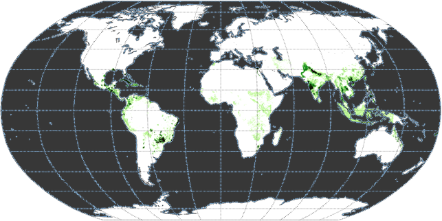
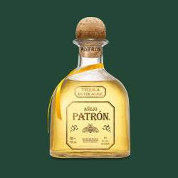
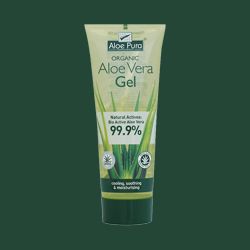

Recipies
All recipies you can craft with Sugar Cane
Choose which items to craft
For each item crafted, you will recieve more knowledge about it.

Tequila
Sugar

Aloe Vera
Tequila
Sugar
Aloe Vera
Tequila
Sugar
Aloe Vera
Tequila
Ingredients:
- Baby Agave 1/1
- Sugar 0/1
- Water 0/1
Your tasks:
Acomplish these tasks and raise your ecology level
- 1. Craft 5 Tequilas (2/5)
- 2. Find 10 different Plants (2/10)
- 3. Find 3 plants in the Tropehuset (1/3)
Welcome to your herbary
Here you can see all the plants you have scanned.
Scan new plants
Scan their QRCodes to learn more...